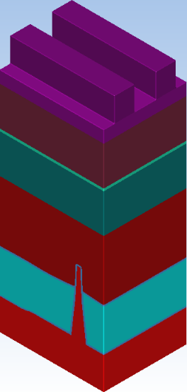
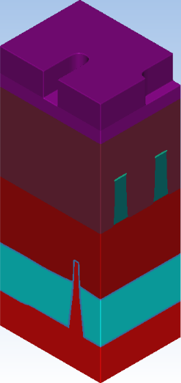

FinFET 제작 과정과 마스크
FinFET은 마스크를 바꿔 가며 같은 웨이퍼에 모양을 여러 번 새겨서 만듭니다. 마스크가 쓰이는 대표적인 단계 여덟 곳을 3D 그림으로 따라갑니다.
마스크는 이렇게 쓰입니다
웨이퍼 위에 감광액(resist)을 바르고 마스크를 통해 빛을 쪼이면, 마스크 모양대로 감광액에 선이나 구멍이 만들어집니다. 이 과정을 리소그래피(litho)라고 합니다.
그 다음 깎아 내는 과정을 식각(etch, RIE)이라고 합니다. 감광액이 덮고 있는 곳은 깎이지 않고, 드러난 곳만 깎입니다.
아래 그림에서 보라색 덩어리는 감광액입니다.
1. fin 만들기
fin은 트랜지스터의 채널이 되는, 웨이퍼 위로 솟은 얇은 실리콘 벽입니다. fin을 만드는 데 마스크가 두 번 쓰입니다.

① fin의 틀이 되는 기둥 (mandrel)
실리콘 웨이퍼 위에 얇은 산화막과 질화막(초록색)을 깔고, 그 위에 비정질 실리콘을 올립니다.
이 비정질 실리콘을 Mand 마스크 모양으로 깎은 것이 그림의 붉은 기둥입니다.
기둥은 fin 자체가 아니라 fin을 만들기 위한 임시 틀입니다.

② 기둥 옆면에 벽 세우기 (spacer)
기둥 위에 산화막(민트색)을 입히고 전체를 깎으면, 기둥 옆면에만 얇은 벽이 남습니다.
이 벽은 마스크 없이 기둥을 따라 저절로 생깁니다.

③ 잘라 낼 곳 정하기
FinCut 마스크는 필요 없는 fin 부분을 잘라 내는 마스크입니다.
감광액이 덮지 않은 곳(그림에서 왼쪽 아래에 기둥과 벽이 드러난 곳)은 이어지는 식각에서 벽이 제거됩니다.

④ 기둥을 없애고 벽만 남기기
기둥(비정질 실리콘)을 제거하면 얇은 벽만 남습니다.
이 벽이 아래 실리콘을 깎을 때 가려 주는 마스크 역할을 해서, 벽 아래 부분이 fin으로 남습니다.
기둥 하나에서 벽이 양옆에 하나씩 생기므로, fin 간격은 기둥 간격의 절반이 됩니다.
2. 게이트 만들기
fin 사이를 산화막(STI)으로 채우고 fin의 윗부분만 드러낸 뒤에 게이트를 만듭니다. 이 공정의 첫 게이트는 나중에 제거되는 임시 게이트(sacrificial gate)입니다.

⑤ 게이트 선 만들기
임시 게이트 재료로는 비정질 실리콘을 씁니다.
Gate 마스크로 감광액에 줄무늬를 만들고(그림의 보라색 두 줄), 이 모양대로 아래를 깎으면 게이트 선이 됩니다.
감광액 아래의 여러 겹은 모양을 아래로 정확하게 옮기려고 깐 보조막(ODL, SiARC, 질화막)입니다.

⑥ 게이트 선 자르기
Gate 마스크로 만든 게이트 선은 길게 이어져 있습니다.
GateCut 마스크는 이 선을 원하는 곳에서 끊어서, 서로 다른 트랜지스터의 게이트로 나눕니다.
그림에서 감광액이 오목하게 파인 곳이 끊어질 자리입니다.
3. 금속 게이트로 바꾸기
임시 게이트는 나중에 제거되고, 그 자리에 high-k 절연막(HfOx)과 금속이 들어갑니다. 이 방식을 RMG(Replacement Metal Gate)라고 합니다.

⑦ NMOS 쪽 금속 고르기
NMOS와 PMOS는 게이트 금속이 서로 다릅니다.
공정 목록에는 PMOS용 금속(TiN, TaN)을 입힌 뒤, NWF 마스크로 식각하고, NMOS용 금속(TiAl)을 입히는 순서로 적혀 있습니다.
그림에서 보라색 감광액이 덮지 않은 곳(올리브색 금속이 드러난 곳)이 식각되는 자리입니다.
4. 위쪽 배선과 연결하기

⑧ 전기가 드나드는 구멍
트랜지스터를 다 만들고 나면, 위쪽 배선과 잇기 위해 절연막에 구멍을 뚫습니다.
Contact 마스크가 구멍의 위치를 정합니다. 그림에서는 맨 위 감광액에 길쭉한 홈이 열려 있습니다.
이 구멍을 텅스텐(W)으로 채워서 LI(local interconnect, 짧은 국소 배선)를 만듭니다.
마스크 정리
공정 목록에서 LTH(리소그래피)라고 적힌 단계마다 마스크가 쓰입니다. fin부터 LI까지의 마스크는 다음과 같습니다.
| 마스크 | 하는 일 | 위 그림 |
|---|---|---|
| Mand | fin의 틀이 되는 기둥 모양 | ① |
| FinCut | 필요 없는 fin 잘라 내기 | ③ |
| NWell | PMOS가 들어갈 n형 웰 영역 | 없음 |
| Gate | 게이트 선 모양 | ⑤ |
| GateCut | 게이트 선 끊기 | ⑥ |
| NWF | NMOS 쪽 게이트 금속 영역 | ⑦ |
| Contact | 위 배선과 잇는 구멍 | ⑧ |
| LI | 짧은 국소 배선 | ⑧ |
그림은 Coventor 공정 시뮬레이터로 만든 FinFET 모델의 단계별 3D 화면입니다.